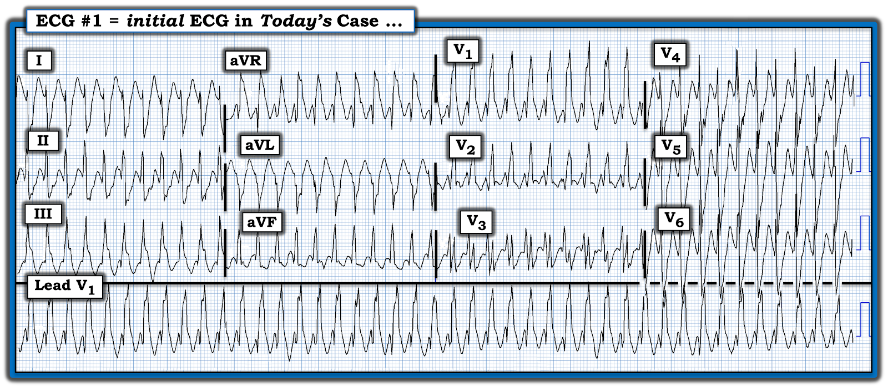
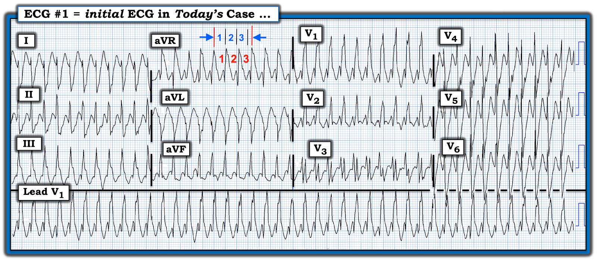
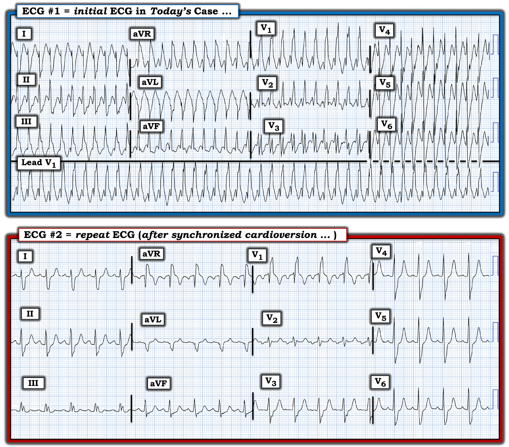

ECG Blog #384 — Sao nhanh thế?
Điện tâm đồ ở Hình 1 được ghi từ một nam thanh niên có tiền sử bệnh tim do thấp — đến khám vì “hồi hộp đánh trống ngực”. Bệnh nhân ổn định huyết động vào thời điểm ghi bản ghi này.
- BẠN sẽ đọc điện tâm đồ ở Hình 1 như thế nào?
- Bạn sẽ điều trị bệnh nhân như thế nào?


SUY NGHĨ CỦA TÔI về điện tâm đồ ở Hình 1:
“Tin tốt” trong ca hôm nay — là bệnh nhân ổn định huyết động vào thời điểm ghi điện tâm đồ ban đầu ở Hình 1. Theo định nghĩa, điều này có nghĩa là dù tần số tim nhanh — nhân viên y tế vẫn có ít nhất “một chút thời gian” để cân nhắc nguyên nhân của nhịp trước khi bắt đầu điều trị. Theo Cách tiếp cận Ps, Qs, 3R (Xem ECG Blog #185):
- Nhịp ở Hình 1 nhanh và Regular (đều).
- Theo phương pháp Cách-Một-Nhát (hay trong ca này là phương pháp Cứ-Mỗi-3-Nhát) (Xem ECG Blog #210) — Rate (tần số) của nhịp là ~250-260 lần/phút (tức là, Như thấy ở Hình 2 — khoảng R-R của mỗi 3 nhát là 3.6 ô lớn — nghĩa là 1/3 tần số = ~85 lần/phút X 3 ~250-260 lần/phút).
- QRS rộng (tức là, ~0.13-0.14 giây).
- Không có dấu hiệu rõ ràng của sóng P (và do đó không có dấu hiệu của bất kỳ Relation (liên hệ) nào giữa hoạt động nhĩ và các phức bộ QRS lân cận).
Tổng hợp lại tất cả: Nhịp ở Hình 1 là một nhịp đều WCT (nhịp nhanh QRS rộng — Wide-Complex Tachycardia) cực nhanh (tức là, ~250-260 lần/phút) — và không có dấu hiệu rõ ràng của hoạt động nhĩ.
- Điều MẤU CHỐT cần phân định với điện tâm đồ #1 — là giữa VT (nhịp nhanh thất — Ventricular Tachycardia) — hay một dạng nào đó của SVT (nhịp nhanh trên thất — SupraVentricular Tachycardia).
- Về mặt thống kê, trong quần thể người lớn không chọn lọc — VT phổ biến hơn nhiều so với nhịp SVT, đặc biệt ở một bệnh nhân như ca hôm nay, người có bệnh tim nền. Dù vậy — vì bệnh nhân hôm nay là một “nam thanh niên” — và tần số của nhịp hôm nay cực nhanh (tức là, 250-260 lần/phút — nhanh hơn mức thường thấy ở một nhịp VT vẫn giữ được hình dạng QRS rõ ràng) — rõ ràng chúng ta không thể loại trừ khả năng một nhịp SVT.
- NẾU nhịp hôm nay là SVT — thì tần số 250-260 lần/phút rõ ràng quá nhanh để là nhịp nhanh xoang. Dù cuồng nhĩ (AFlutter) (dẫn truyền AV 1:1) và nhịp nhanh nhĩ (ATach) đều là những khả năng — một nhịp SVT vào lại (AVNRT hoặc AVRT) có vẻ khả năng cao hơn nhiều. Tần số cực nhanh làm tăng khả năng của một vòng vào lại phụ thuộc AP (đường phụ — Accessory Pathway) (tức là, của AVRT).
- ĐIỀU CỐT LÕI: XIN NHẤN MẠNH — “Quá trình tư duy” ở trên chỉ nên mất không quá vài giây để hoàn tất! Dù vậy — tôi vẫn không thể chắc chắn về nguyên nhân của nhịp hôm nay dựa trên phân tích cho tới lúc này. Điểm MẤU CHỐT: Ngay cả bác sĩ lâm sàng giàu kinh nghiệm nhất cũng thường không chắc chắn 100% về nguyên nhân của một nhịp WCT đều vào thời điểm họ cần bắt đầu điều trị.


Hình dạng QRS có giúp ích không?
Hãy nhìn lại nhịp WCT đều ở Hình 2:
- Hình dạng QRS ở điện tâm đồ #1 nghiêng về VT? — hay — một SVT kèm hoặc BBB (blốc nhánh — Bundle Branch Block) có từ trước hoặc dẫn truyền lệch hướng?
TRẢ LỜI: Hình dạng QRS có giúp ích không?
Hình dạng QRS ở Hình 2 có thể phù hợp với dẫn truyền trên thất (tức là, do BBB có từ trước — và/hoặc — do dẫn truyền lệch hướng):
- Phức bộ QRS ba pha RsR’ thấy ở chuyển đạo V1 của điện tâm đồ #1 (với sóng S đi xuống dưới đường nền — và “tai thỏ” bên phải cao hơn, cùng với sóng S tận rộng ở các chuyển đạo bên I, V6) — phù hợp với dẫn truyền kiểu RBBB.
- Sóng S chiếm ưu thế ở chuyển đạo I, với sườn xuống dốc — kết hợp với QRS dương là chủ yếu ở chuyển đạo III — phù hợp với dẫn truyền kiểu LPHB.
- ĐIỀU CỐT LÕI: Dùng hình dạng QRS không hoàn hảo để phân biệt VT với nhịp SVT. Đôi khi nó giúp ích. Những lúc khác — nó không giúp ích. Phần lớn thời gian — hình dạng QRS cung cấp những manh mối “dịch chuyển khả năng” VT so với nhịp SVT theo hướng này hay hướng kia, dù không chắc chắn 100%. Hình dạng QRS hữu ích nhất khi: i) Thấy hình dạng RBBB hoàn toàn điển hình (tức là, một rsR’ ở chuyển đạo V1, với sóng S đi xuống dưới đường nền và R’ cao, mảnh hơn = “tai thỏ bên phải” ở chuyển đạo V1 này — kèm sóng S tận rộng ở các chuyển đạo bên I và V6); hoặc, ii) Thấy hình dạng QRS không rõ ràng, không phù hợp với bất kỳ dạng rối loạn dẫn truyền đã biết nào.
- TRẢ LỜI “Dài” : Trong ca hôm nay — hình dạng QRS ở điện tâm đồ #1 rõ ràng có thể phù hợp với dẫn truyền trên thất biểu hiện RBBB/LPHB. Dù vậy — tôi cho rằng có một vài đặc điểm hơi không điển hình so với hình dạng QRS được dự đoán khi có LPHB — bao gồm: i) Không có dạng qR điển hình ở cả hai chuyển đạo II và III (tức là, phức bộ QRS gần như đẳng pha ở chuyển đạo II — và không có sóng q khởi đầu rõ ràng đứng trước sóng R dương ở chuyển đạo III); và, ii) QRS âm hoàn toàn ở chuyển đạo aVL (trong khi thông thường chuyển đạo aVL sẽ cho thấy một phức bộ rS tương tự, như ta thấy ở đây trong chuyển đạo I). Xét tỷ lệ lưu hành theo thống kê của VT ở bệnh nhân có nhịp WCT đều — tôi nghi ngờ VT phân nhánh cho nhịp của ca hôm nay. Dù vậy — tôi hoàn toàn không chắc chắn về chẩn đoán (Xem ECG Blog #197 — cũng như các tài liệu khác liệt kê bên dưới để tìm hiểu thêm về chủ đề này).
- TRẢ LỜI “Ngắn”: Bệnh nhân trong ca hôm nay đến viện với một nhịp WCT đều, không có dấu hiệu rõ ràng của hoạt động nhĩ. Mặc dù ban đầu tôi nghi ngờ VT phân nhánh — không có cách nào để chắc chắn rằng nhịp này không phải là SVT vào lại chỉ từ một bản ghi duy nhất ở Hình 2. Vì ban đầu bệnh nhân ổn định huyết động — thử dùng Verapamil tĩnh mạch có thể là điều trị ban đầu được lựa chọn, vì Verapamil tĩnh mạch thường có hiệu quả với cả VT phân nhánh lẫn các nhịp SVT vào lại (AVNRT, AVRT). Một cách khác (và cũng thích hợp như vậy, xét tần số thất cực nhanh) — có thể chọn an thần và sốc điện chuyển nhịp đồng bộ ngay lập tức.
DIỄN TIẾN CỦA CA BỆNH:
Đã thử dùng Verapamil tĩnh mạch liều thấp ban đầu — nhưng không thành công. Lúc này, quyết định sốc điện chuyển nhịp đồng bộ được đưa ra — giúp chuyển sang nhịp thấy ở điện tâm đồ #2.
CÂU HỎI:
- Bạn đọc điện tâm đồ ghi lại ở Hình 3 như thế nào?
- Điện tâm đồ #2 có giúp chúng ta biết nhịp ở điện tâm đồ #1 là gì không?


KẾT LUẬN CA BỆNH:
Điện tâm đồ ghi lại ở Hình 3 cho thấy nhịp ở điện tâm đồ #1 đã chuyển về nhịp nhanh xoang (sóng P xoang dương ở chuyển đạo II đã phục hồi — với tần số ~110 lần/phút).
- So sánh hình dạng QRS giữa 2 bản ghi ở Hình 3 (tức là, trong và sau nhịp WCT) — cho thấy sự giống nhau đáng kinh ngạc ở gần như tất cả 12 chuyển đạo! Đặc biệt đáng chú ý — là sóng khởi đầu gần như giống hệt nhau ở tất cả các chuyển đạo (tức là, sóng r khởi đầu nhỏ, mảnh ở chuyển đạo I — hình dạng và độ dốc tương tự của sóng R hai pha ở chuyển đạo II; sóng r khởi đầu trông giống hệt nhau ở chuyển đạo V1,V2 — và tương tự như vậy ở 8 chuyển đạo còn lại).
- ĐIỀU CỐT LÕI: Việc thấy hình dạng QRS gần như giống hệt nhau trong và sau nhịp WCT — xác nhận rằng nguyên nhân của nhịp WCT ở điện tâm đồ #1 là trên thất, ở đây kèm RBBB/LPHB có từ trước. Tần số thất rất nhanh đạt được (tức là, ~250-260 lần/phút) — cùng với việc cần sốc điện chuyển nhịp đồng bộ gợi ý: i) Nhịp ở điện tâm đồ #1 nhiều khả năng là AVRT xuôi chiều; và, ii) Nam thanh niên này, với bệnh tim do thấp đã xác định và blốc hai phân nhánh nền (RBBB/LPHB), nhiều khả năng sẽ được lợi nhất nếu được chuyển tới chuyên khoa Điện sinh lý tim (EP) để triệt đốt.
==================================
Lời cảm ơn: Xin cảm ơn Mubarak Al-Hatemi (từ Qatar) đã chia sẻ ca bệnh và bản ghi này.
==================================
Các bài ECG Blog liên quan đến ca hôm nay:
- ECG Blog #205 — Trình bày Cách tiếp cận hệ thống của tôi để đọc điện tâm đồ 12 chuyển đạo.
- ECG Blog #185 — Ôn lại Cách tiếp cận Ps, Qs, 3R để đọc nhịp.
- ECG Blog #210 — ôn lại phương pháp Cách-Một-Nhát để ước tính nhanh tần số tim.
- ECG Blog #220 — ôn lại cách tiếp cận một WCT (nhịp nhanh QRS rộng — Wide-Complex Tachycardia) đều.
- ECG Blog #323 — WCT có hình dạng RBBB = VT phân nhánh.
- ECG Blog #196 — Trình bày một ca khác có nhịp WCT đều.
- ECG Blog #204 — Ôn lại chẩn đoán điện tâm đồ các blốc nhánh (RBBB/LBBB/IVCD).
- ECG Blog #203 — Ôn lại chẩn đoán điện tâm đồ về trục và các blốc phân nhánh. Để ôn lại hình dạng QRS trong các blốc hai phân nhánh (RBBB/LAHB; RBBB/LPHB) — Xem Video Pearl trong bài này.
- ECG Blog #211 — TẠI SAO xảy ra dẫn truyền lệch hướng?
- ECG Blog #197 — Ôn lại VT phân nhánh.
- ECG Blog #301 — Trình bày một WCT có nguồn gốc TRÊN THẤT! (với RẤT NHIỀU nội dung về dẫn truyền lệch hướng).
- ECG Blog #38 và Blog #85 — Ôn lại VT phân nhánh.
- ECG Blog #278 — Một ca khác về nhịp WCT đều ở một người trưởng thành trẻ tuổi hơn.
- ECG Blog #35 — Ôn lại VT đường ra thất phải (RVOT).
- ECG Blog #42 — Tổng quan toàn diện các tiêu chuẩn phân biệt VT với dẫn truyền lệch hướng.
- Xem ECG Blog #240 — để ôn lại cách đánh giá điện tâm đồ ở bệnh nhân có nhịp SVT đều (bao gồm phân biệt giữa các loại SVT vào lại khác nhau).
- Xem ECG Blog #250 — để ôn lại một ca khác về SVT đều kèm ST chênh xuống.
- ECG Blog #220 — ôn lại DANH SÁCH #1: Các nguyên nhân của WCT đều và — CÁCH đánh giá tính ổn định huyết động.
- González-Torrecilla và cs.: Ann Noninvasive Electrocardiol 16(1):85-95, 2011 — Tổng quan về phân biệt giữa AVNRT với AVRT và các nhịp SVT đều khác ở bệnh nhân không có WPW.
- Mời xem bài ngày 12 tháng 11 năm 2019 trên Dr. Smith's ECG Blog — trong đó tôi đã bình luận một ca thuộc một loại nhịp SVT đều (cuồng nhĩ) khác.